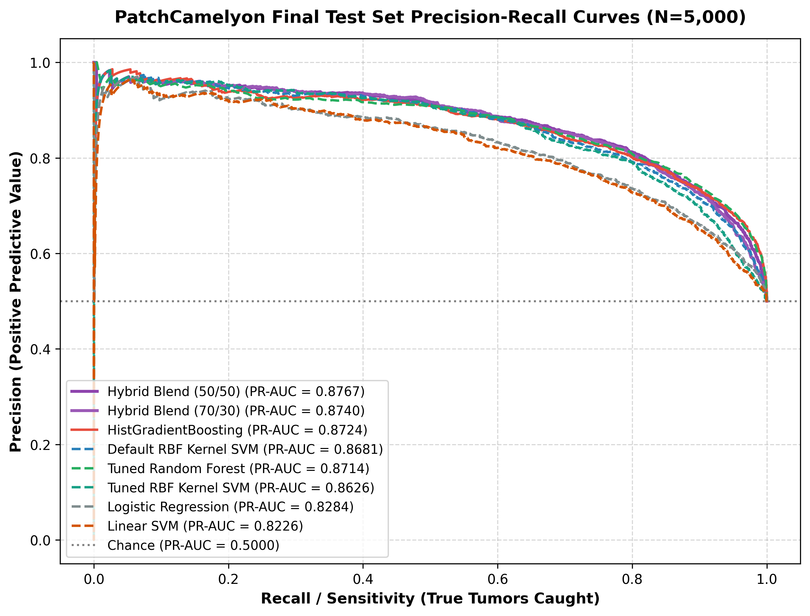
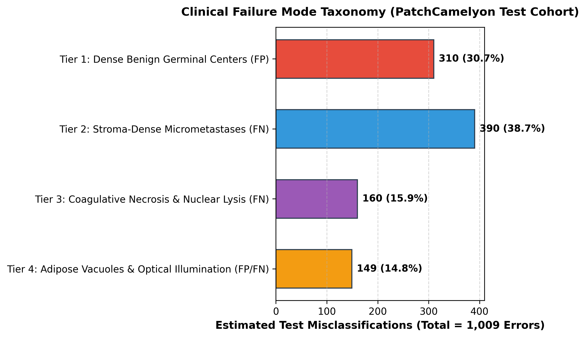

Project Overview
Automated sentinel lymph node metastasis detection for breast cancer staging.
Metastatic involvement of sentinel lymph nodes is the most critical prognostic indicator for breast cancer survival. Pathologists must manually review gigapixel Whole-Slide Images (WSIs), an exhausting process where focal micro-metastases containing as few as 10–20 cancer cells can be overlooked. This project provides a controlled benchmark comparing classical machine learning paradigms using handcrafted multimodal histological features on the PatchCamelyon (PCam) dataset.
Every $96 \times 96$ px patch (scanned at $10\times$ magnification, $0.97\,\mu\text{m/px}$) carries a binary label governed strictly by its central $32 \times 32$ window: the patch is positive (tumour) if and only if at least one pixel of metastatic carcinoma falls within this central region. We evaluate on a fixed split of 40,000 training, 5,000 validation, and 5,000 test patches.
59-Dimensional Feature Pipeline
Biologically grounded histological representations engineered from raw pixels.
| Feature Family | Dim | Biological Target |
|---|---|---|
| Color Moments | 18 | Mean & std across RGB, HSV, and CIE-Lab. Captures basophilic hematoxylin staining vs eosin stroma. |
| GLCM Texture | 6 | Contrast, dissimilarity, homogeneity, energy, correlation, ASM. Measures chromatin spatial disorder. |
| Local Binary Patterns | 11 | Rotation-invariant uniform codes ($P=8, R=1$). Detects nuclear membrane borders and pleomorphism. |
| Spatial Edge Gradients | 4 | Sobel mean, Sobel std, edge density, Laplacian variance. Measures nuclear crowding and packing density. |
| Bilinear Pixel PCA | 20 | Downsampled spatial luminance projections. Preserves macroscopic tissue architecture. |
Machine Learning Paradigms
Controlled progression from linear baselines to multi-paradigm ensembles.
- Linear Logistic Regression ($L_2$) & Linear SVM: Established the flat hyperplane capacity ceiling ($\approx 75.8\%$ test accuracy), proving that linear decision boundaries cannot untangle histological tissue complexity.
- RF Tuned Random Forest (150 Trees): Maximized positive predictive value ($85.31\%$ precision) and achieved the smallest generalization drop ($\Delta = 0.98\%$) of any model.
- GBM HistGradientBoosting: Fast histogram-binned trees that broke the linear decision bottleneck, reaching $78.82\%$ test accuracy as the top single model.
- SVM RBF Kernel SVM: Continuous hyperspherical decision boundaries. Highest sensitivity ($73.28\%$) but suffered from validation sample variance when over-regularized.
- Champion Hybrid Blend (50% RBF + 50% HistGBM): Tournament champion with the lowest calibration Brier score ($0.1426$), $79.76\%$ test accuracy, and $0.8853$ ROC-AUC.
The Empirical Feature Representation Limit
Why 613 consensus failures across all model families point to a fundamental ceiling, not algorithmic error.
Of the 1,009 total misclassifications made by the champion ensemble, 613 (60.7%) were failures shared simultaneously across all model families — Logistic Regression, Random Forest, HistGBM, and RBF SVM all made the same prediction error on these 613 patches. This figure constitutes 12.3% of the entire test cohort. These consensus failures are not caused by model-specific algorithmic weaknesses; they arise because global pooled features cannot encode the sub-cellular spatial relationships that a pathologist resolves under high magnification. Convolutional receptive fields are necessary to surpass this ceiling.
| Failure Tier | Error Type | Share | Biological Mechanism |
|---|---|---|---|
| Tier 1: Dense Germinal Centers | False Positive | 30.7% | Reactive lymphoid follicles produce high edge density and intense hematoxylin absorption that global features cannot distinguish from invasive carcinoma sheets. |
| Tier 2: Stroma-Dense Micrometastases | False Negative | 38.7% | Desmoplastic stroma dilutes the localized cancer signal during global feature pooling when only 5–15 cells occupy the central window. |
| Tier 3: Necrosis & Ghost Cells | False Negative | 15.9% | Ischemic karyolysis dissolves nuclear structure into amorphous ghost cells, collapsing recognizable LBP texture codes. |
| Tier 4: Adipose & Boundary Artifacts | Both | 14.7% | Perinodal fat vacuoles (>70% unstained area) and optical refractive edges skew GLCM statistics systematically. |
Patch Inspector
Live Confusion Matrix (N = 5,000)
Counts recalculate in real time as the threshold changes.
| Predicted Benign (0) | Predicted Tumour (1) | |
|---|---|---|
| Actual Benign (2,500) | 2,161 True Negatives | 339 False Positives |
| Actual Tumour (2,500) | 673 False Negatives | 1,827 True Positives |
Operational Metrics
All metrics update as the threshold and model change.
Pathological Failure Gallery
4-tier taxonomy of classification failures on the held-out test cohort. Click any card to inspect its feature profile in the Diagnostic Studio.
Final Test Benchmark Leaderboard (N = 5,000)
Evaluated once on the untouched held-out test cohort. Ranked by overall test accuracy. Bootstrap 95% confidence intervals computed over 1,000 resamples ($p < 10^{-7}$ vs linear baselines).
| Model | Accuracy | ROC-AUC | PR-AUC | Sensitivity | Specificity | Precision | F1 | Brier |
|---|---|---|---|---|---|---|---|---|
| ResNet-18 (Deep CNN Benchmark) | 84.94% | 0.9392 | 0.9455 | 75.04% | 94.84% | 93.57% | 0.8329 | 0.1168 |
| Hybrid Blend (50/50 RBF + HistGBM) | 79.76% | 0.8853 | 0.8767 | 73.08% | 86.44% | 84.35% | 0.7831 | 0.1426 |
| Hybrid Blend (70/30 RBF + HistGBM) | 79.56% | 0.8804 | 0.8740 | 72.32% | 86.80% | 84.57% | 0.7796 | 0.1453 |
| HistGradientBoosting | 78.82% | 0.8845 | 0.8724 | 71.84% | 85.80% | 83.50% | 0.7723 | 0.1460 |
| Default RBF Kernel SVM | 78.80% | 0.8746 | 0.8681 | 73.28% | 84.32% | 82.37% | 0.7756 | 0.1493 |
| Tuned Random Forest (150 Trees) | 78.46% | 0.8863 | 0.8714 | 68.76% | 88.16% | 85.31% | 0.7615 | 0.1467 |
| Tuned RBF Kernel SVM ($C=3.0$) | 77.92% | 0.8637 | 0.8626 | 70.88% | 84.96% | 82.50% | 0.7625 | 0.1535 |
| Logistic Regression ($L_2$, Baseline) | 75.84% | 0.8373 | 0.8284 | 70.96% | 80.72% | 78.63% | 0.7460 | 0.1679 |
| Linear SVM (Dual, $C=1.0$) | 75.46% | 0.8292 | 0.8226 | 71.12% | 79.80% | 77.88% | 0.7435 | 0.1850 |
ROC & PR Discrimination Curves
Full threshold discrimination on the held-out test cohort.


Generalization Gap (Val → Test)
Overfitting quantified as validation-to-test accuracy drop.
| Model | Val Acc | Test Acc | Drop (Δ) |
|---|---|---|---|
| Tuned Random Forest | 79.44% | 78.46% | −0.98% (most stable) |
| HistGradientBoosting | 80.66% | 78.82% | −1.84% |
| Hybrid Blend (50/50) | 81.92% | 79.76% | −2.16% |
| Logistic Regression | 78.18% | 75.84% | −2.34% |
| Tuned RBF Kernel SVM | 82.36% | 77.92% | −4.44% (overfitted) |
Tree ensembles generalized with consistent stability (Δ < 2%), while the high-capacity tuned RBF SVM ($C=3.0$) suffered from validation sample variance. Blending both orthogonal paradigms yielded the best test generalization overall.
Error Consensus & Failure Taxonomy
Cross-paradigm consensus failures demonstrate the empirical feature limit.

